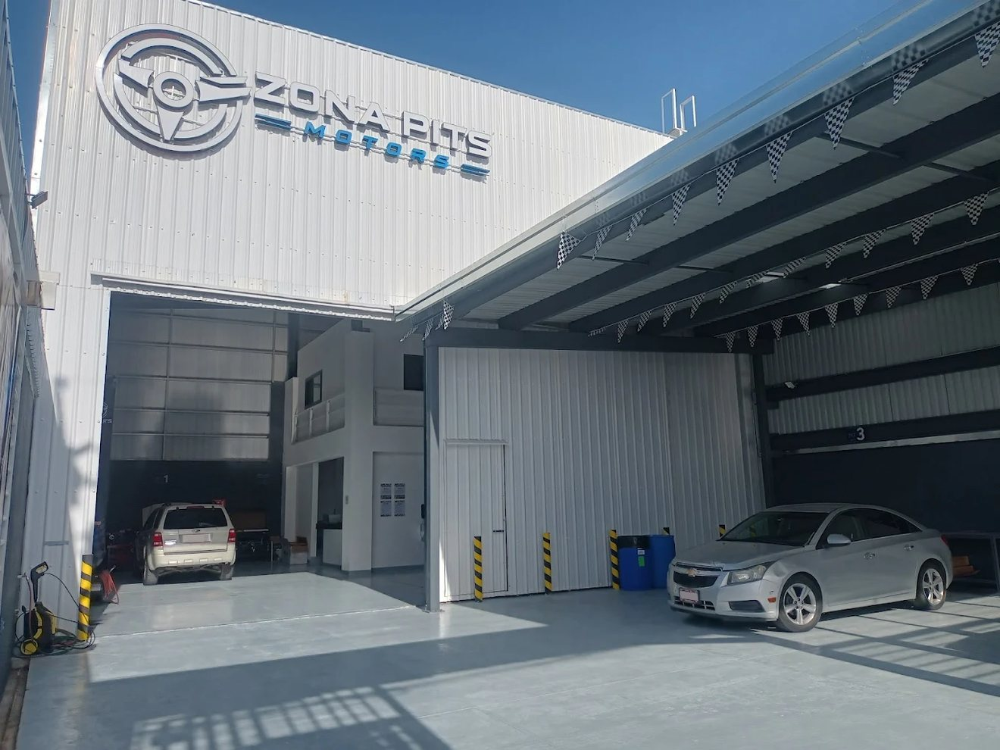
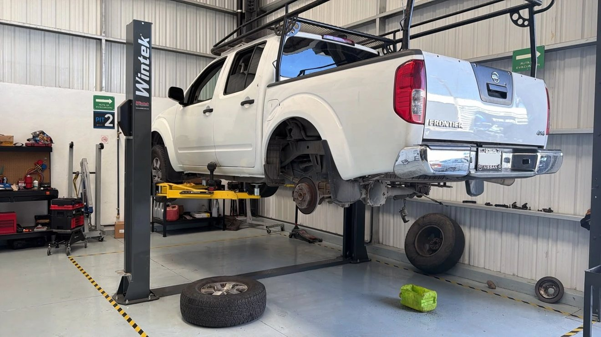
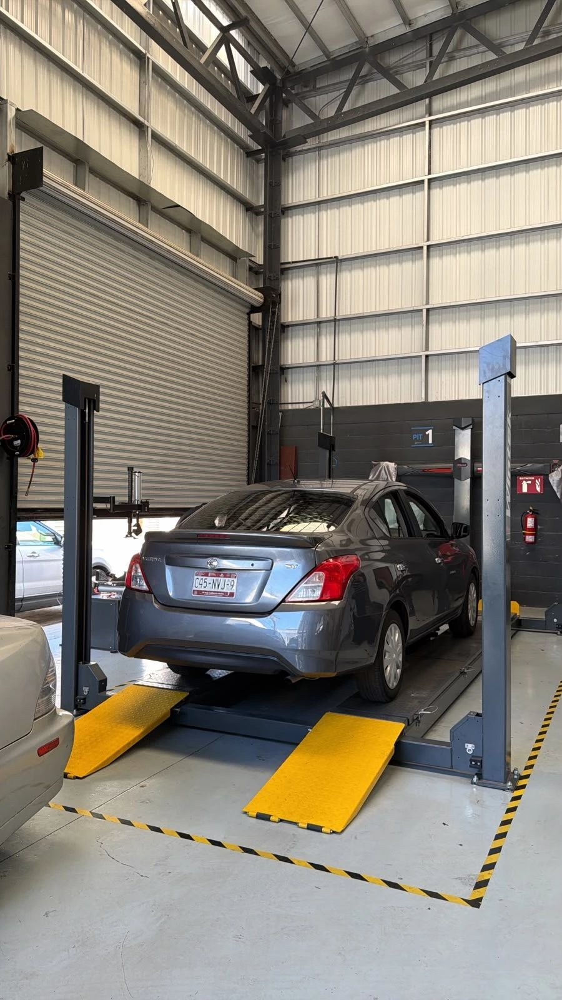
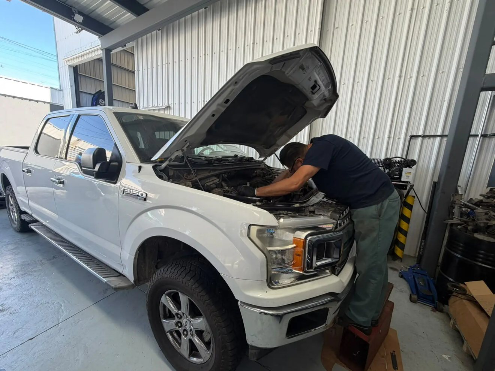
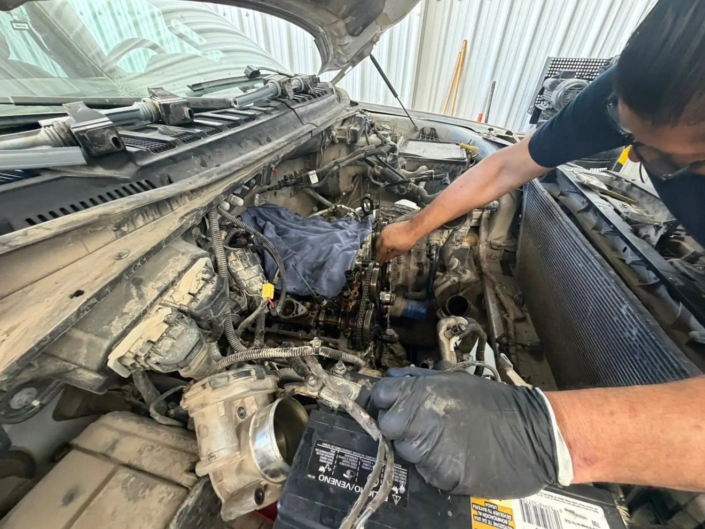
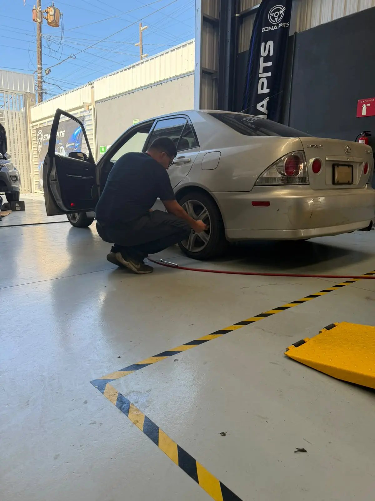
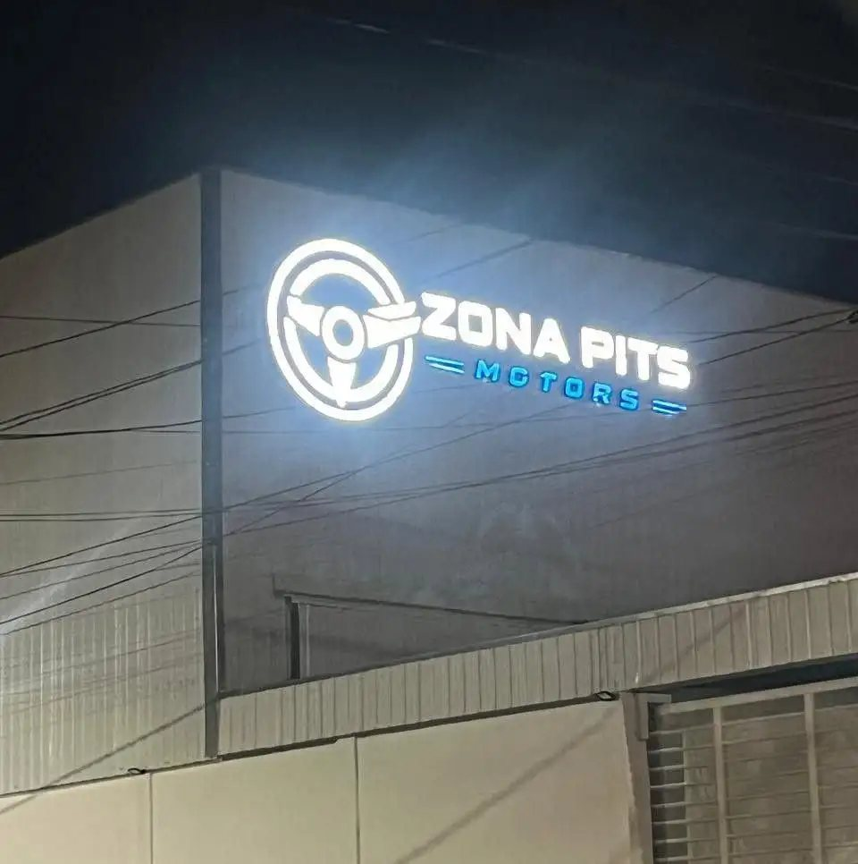
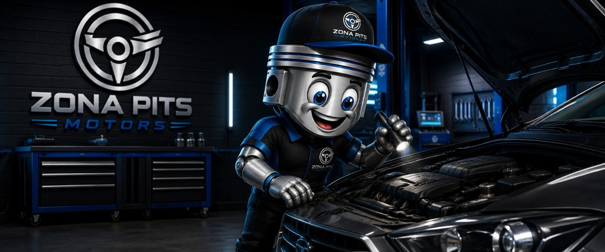

Diagnóstico certero
No cambiamos piezas al azar. Realizamos escaneo OBDII y te mostramos exactamente qué necesita tu auto, con el reporte en la mano.
No esperes a que una falla te deje tirado. En Zona Pits Motors cuidamos tu inversión con diagnósticos precisos y mantenimiento preventivo de nivel profesional.
Sin compromiso de compra. Te explicamos qué tiene tu auto y tú decides.
Zona Pits Motors es un taller mecánico en Tijuana especializado en el mantenimiento preventivo y correctivo de autos particulares: afinaciones, cambio de aceite, frenos, suspensión, aire acondicionado y diagnóstico por computadora.
Confianza y transparencia
No cambiamos piezas al azar. Realizamos escaneo OBDII y te mostramos exactamente qué necesita tu auto, con el reporte en la mano.
Revisamos frenos, suspensión, dirección, llantas y fluidos para que viajes sin riesgos, tú y tu familia.
Hablamos tu idioma, no solo «mecánico». Te justificamos cada servicio sin ventas forzadas: si algo puede esperar, te lo decimos.
Servicios
Realizar los servicios a tiempo es un ahorro inteligente. Evita reparaciones costosas y alarga la vida de tu motor.
El seguro de vida para tu motor. Usamos aceites de alta calidad que ahorran combustible y filtros que realmente protegen.
Tu seguridad y la de tu familia es primero. Revisión y cambio de componentes con refacciones confiables, no con la más barata.
Confort total en cada viaje. Mantenimiento, detección de fugas y recarga de gas para que el clima enfríe como el primer día.
Tecnología de agencia. Detectamos fallas eléctricas y de motor con precisión para evitar gastos innecesarios por cambiar lo que no falla.
Fotos reales del taller y del trabajo diario.







1 / 7
Plan Plus
Un programa diseñado para dueños responsables que quieren olvidarse de las fallas repentinas.

Preguntas frecuentes
Lo recomendable es cada 5,000 kilómetros o cada 6 meses, lo que ocurra primero, según el tipo de uso. El mantenimiento preventivo evita fallas mayores y ahorra dinero a largo plazo.
Sí. En tu primera visita realizamos el escaneo OBDII y una inspección visual sin costo alguno, y te entregamos un reporte claro de lo que necesita tu vehículo. No es un gancho publicitario: el diagnóstico no tiene costo aunque decidas no reparar con nosotros.
No hay problema. No hay compromiso de compra: te llevas el reporte detallado de tu vehículo y tú decides cuándo realizar el servicio.
Estamos en Calle Jorge Isaac 2740-A, Tijuana, B.C. Nuestro horario es de lunes a viernes de 8:30 a 18:00 y sábados de 8:30 a 14:00; domingos permanecemos cerrados. Puedes escribirnos por WhatsApp o llamar al 664 629 6184.
La inspección revisa frenos, suspensión, dirección, llantas y niveles de fluidos, con el objetivo de detectar fallas antes de que te dejen tirado en el camino.
El Plan Plus es nuestro programa de clientes frecuentes: recordatorios automáticos de tu próximo servicio, historial digital de todo lo que se le ha hecho a tu auto, descuentos exclusivos en mano de obra y reportes del estado de salud de tu vehículo por correo o WhatsApp.
Reseñas de Google
Estas reseñas las sirve Elfsight desde Google, y ese componente solo se carga si aceptas las cookies de terceros. Si prefieres no aceptarlas, puedes leerlas igual en nuestra ficha de Google.
Siguiente paso
Escríbenos por WhatsApp con el modelo de tu auto y te damos fecha, hora y un presupuesto claro antes de tocar una sola pieza.
La vía más rápida es WhatsApp: mándanos el modelo de tu auto y qué sientes que trae. Si ya sabes qué servicio necesitas, dinos cuál y te confirmamos disponibilidad el mismo día.
Escribir por WhatsAppRespondemos dentro del horario de atención: lunes a viernes de 8:30 a 18:00 y sábados de 8:30 a 14:00. Fuera de ese horario, te contestamos el día hábil siguiente.